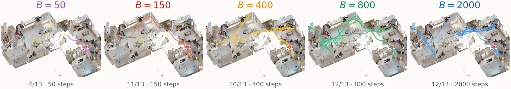
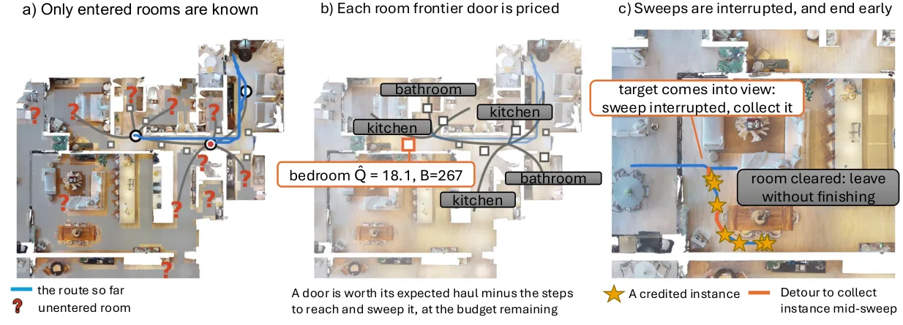
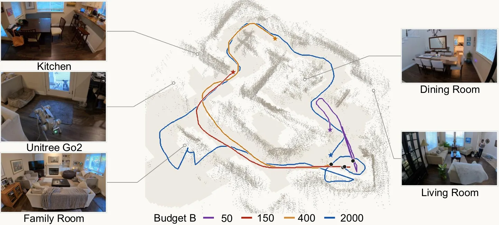

赶时间：教 VLN 做预算条件化的目标搜索
Racing the Clock: Teaching VLNs Budget-Conditioned Object Search
一句话：它把“还剩多少预算”做成显式状态变量，并且证明“专家越强不等于教得越好”——决定监督质量的是专家的动作是否依赖学生永远拿不到的信息。对做可靠状态估计的人，这篇真正可借的是评测协议（同一场景/起点/解码，只改计数文本）和“可感知/可学习才保留，只能靠行动发现才扣留”的抽象原则。
Collection at B=2000 (room-level)
Collection at B=2000 (object-level)
Expert gap at B=150
作者、单位与技术谱系 · Research context
作者与单位
研究脉络
- Uni-NaVid方法基座关系：学生模型与其推理节奏直接沿用：每执行两个原始动作查询一次、输出接下来四个动作，并沿用其 stage-2 训练配方（冻结视觉编码器、只训 LM 与投影层）。[论文 §V-C、§V-D]
- ADVISOR / A2D（不对称模仿的信息错配）理论上游关系：“学生只能学到专家动作在自身不可观测信息上的边缘分布”这一结论，直接支撑了本文选择房间级抽象的理由。[论文 §II-A、§IV-C 与参考文献 [4][5]]
- 本篇推进：抽象作为设计变量 + 预算条件化评测本篇推进关系：把“专家该看多少”变成可扫描的设计轴，并配上稠密收集率与倒计时干预两种测量，给出“专家回报排名不预测监督质量”的实证。[论文 §IV、§V-B、§V-C]
合作网络
- UC Berkeley ↔ Stanford UniversityUniversity of California, Berkeley → Stanford University关系：共同署名[论文 HTML 作者栏]
- 本篇 ↔ Uni-NaVid 作者组Racing the Clock（本篇） → Uni-NaVid（Zhang 等，RSS 2025）关系：技术依赖[论文 §V-C、§V-D 与参考文献 [2]]
- 本篇 ↔ NCSA DeltaAI / ACCESS 算力Racing the Clock（本篇） → NCSA DeltaAI（ACCESS 分配 CIS261244）关系：项目依赖[论文致谢]
作者单位取自 HTML 作者栏的合并隶属行（两校并列），论文未逐人标注，故不推断个人归属；技术依赖与共同署名均来自正文引用与致谢，未发现师生或实验室隶属的公开证据。
方法本质拆解 · What actually changed
是不是微调？
是对现成 Uni-NaVid 的第二阶段微调，不是从头训练。视觉编码器冻结，只训语言模型与投影层，学习率 1e-5、单 epoch、3,032 步、有效批 128，约 62 小时/4 张 RTX PRO 6000 Blackwell。房间级监督用 388,199 条记录（89 个 HM3D 场景 214,562 条 + 59 个 Matterport3D 场景 173,637 条，预算 50/150/400/800/1200/2000），其中 20% 记录确定性去掉倒计时作为对照；两个 Bellman 学生共享架构与优化，只换专家来源。
有没有额外约束？
预算只以自然语言倒计时出现在输入里，没有数值预算输入，也没有架构改动；目标等值（w_i=1）、单动作成本为 1，把问题限制在“收集 vs 探索”的纯权衡上。发现由策略无关的几何裁判定义：距实例包围体 1.5 m 内、垂直 1.5 m 内、方位角在光轴 39.5° 内（相机 79° 水平视场的半角），每实例只记一次，起点房间内的实例与被排除。专家侧另有一条硬约束：房间级检索必须跨场景，规划某场景时禁用该场景整折的转移记录。
推理/后端到底做了什么？
学生推理是纯闭环前馈：每次查询输出 4 个原始动作，执行完再查；实机上远程 GPU 平均 0.22 秒返回一次，运动执行占主要耗时。专家侧的规划只在训练期用于生成动作标签，推理时不调用。房间级执行器在房间清扫中若发现 5 m 内、有视线的未记目标会中断清扫去采集，之后更新信息状态重规划；清扫方向交替以把左右转比从 2:1 降到 1.2:1。没有因子图、没有全局 BA，也没有显式建图模块。
方法本质是什么？
本质是给“剩余预算”一个显式状态位，并把专家设计变成“信息可得性”的设计：让专家的最优动作只依赖学生能通过探索获得的信息，于是学生学到的不是被平均化的路线，而是带不确定性的搜索策略。它没有做的是：没有改网络结构、没有加记忆模块、也没有把无模型策略接上几何后端。反过来说，它证明了当专家看到学生看不到的目标时，监督会以信息错配的方式失效——这正是“学习先验该给多少”的边界实验。
输入 RGB 历史 + 语言指令 + 倒计时文本，改变的是“专家在生成监督时能看到多少环境信息”，动作是把同一预算索引 Bellman 递推作用在对象级/房间级两种抽象上并蒸馏进 Uni-NaVid，直接效果是只改预算文本即可改变搜索轨迹，且房间级监督在每个预算下收集量最高。

桥接价值Bridge
桥接价值
这篇把“剩余资源”从隐含的 episode 上限变成策略输入，并给出一个可执行的对照协议：固定场景、目标类别、起点、模型与确定性解码，只改指令里的倒计时文本，观察轨迹是否在预算耗尽前就分叉。对我们做主动感知、传感器调度与在线标定，这个协议可以直接搬——它检验的是“策略是否真的用了预算信号”，而不是“跑得久所以找到得多”。第二个桥接点是它的核心论断：专家的动作若依赖学生永远观测不到的量（如未见目标的位置），监督就会被平均化而失效；这与我们在“学习先验 vs 几何优化”之间划分信息边界是同一个问题，只是它把边界画在“能否通过探索获得”。
方法与模块Method
方法摘要
问题形式是 π(a_t | h_t, y, b_t)，b_t = B − Σc(a_k)，每个原始动作（前进 0.25 m、左/右转 30°、停止）计一个预算单位，目标实例被“相机视场 + 近距离”几何裁判记一次，重复访问不再计分。专家统一写成对抽象 z=φ(M) 的预算索引 Bellman 递推：对象级把全部目标位置揭示给专家，退化为带预算的定向问题；房间级只揭示已进入房间的连通性、门口可见物体证据与从 Matterport3D 学的跨场景房间类型先验，未进入房间的内容一律扣留。房间级用 181 个 HM3D 场景的房间转移记录做经验备份，检索严格跨场景（按场景折划分，规划某个场景时排除其所在整折的全部转移），因此先验来自其他环境而不是当前环境的真值。两个专家都蒸馏进 Uni-NaVid，预算只通过自然语言倒计时给出，不加数值输入、不改架构。
可迁移模块
第一是可复用的评测两件套：归一化收集率 N(B)（按预算统计不同实例占比，比二值成功更稠密）与倒计时干预（同起点同解码、只改文本，用“分叉发生的步数”量化敏感性）。第二是专家抽象的对齐判据——“保留学生能感知或能从数据学到的结构，扣留它只能靠行动发现的部分”，这条判据可以直接用来决定在线标定/建图里哪些量该交给学习先验、哪些必须留给在线估计。第三是跨场景经验备份的泄漏控制：用场景折做严格排除，再用加权最近邻在稀疏处插值，这套写法适用于任何“从历史轨迹学先验、又要评估新场景”的设定。

证据Evidence
关键证据与数字
仿真（10 个 held-out HM3D-val 场景、50 个场景-类别对、每对两个确定性起点，即每个预算 100 个 episode，Table II）：B=2000 时房间级监督 VLN 收集 72.7%±6.8，贪心前沿监督 68.5%±7.3、对象级监督 65.5%±7.4、预训练 Uni-NaVid 44.8%±7.0；B=150 时分别为 31.6/25.6/28.3/28.3。专家侧排序相反：对象级专家在 B=800 与 2000 均为 100.0%，房间级为 97.1%/98.0%，两者差距从 B=150 的 45.6 个百分点（91.3% vs 45.7%）缩到 B=2000 的 2.0 个百分点。去倒计时对照：房间级监督仍分别领先 3.0/9.4/4.5/1.7 个百分点，说明优势不全来自预算标注。实机（Lingxi 之外的室内四足，14 把椅子，每预算 5 次）：B=50/150/400/2000 找到 3.4±1.14 / 5.0±1.00 / 7.6±1.52 / 9.2±1.30 把，成功率 24.3%→65.7%（Table III）。
边界与下一步Limits & Next Step
边界与风险
绝对水平仍然偏低：B=2000 的 72.7% 距其专家 98.0% 还有 25 个百分点，且长预算下 92–93% 的前进动作落在已走过的格子上——作者自己把瓶颈归为空间记忆而非监督。非学习的贪心前沿专家从 B=800 起反超所有 VLN（93.8% vs 64.5%），说明“学到语义先验”只在短预算有效。作者明确承认抽象粒度与信息可得性两个因素没有被分离：要做干净归因，还需“给了全部房间内容的房间级专家”和“只允许看已观测目标的个对象级专家”两个补充专家。证据面也很窄：单层室内、等值目标、动作计数预算、实机只有椅子一类与一个家庭。另有一处需要核验：arXiv abs 页摘要写 71.4%，而 HTML v1 的 Table II 与摘要段写 72.7%，两者不一致，本文按 HTML 表格取值。
下一步实验
第一步在我们自己的策略上复现倒计时干预：固定起点与解码，只改“剩余 N 步”文本，记录首次动作分叉的步数与收集量变化，先确认预算信号是否真的被使用。第二步把“重复访问率”当作观测量：给策略加一个显式空间记忆（栅格或拓扑图），看 92–93% 的重复前进能否下降、以及下降是否转化为收集量提升——这能直接回答“记忆还是监督”这个作者留下的问题。第三步做监督源的匹配对照：用同一批记录数训练三个学生（房间级、贪心前沿、去掉预算文本），把“专家回报”与“学生收益”的排序差异做成我们自己的实验表格，作为选择先验来源的判据。

